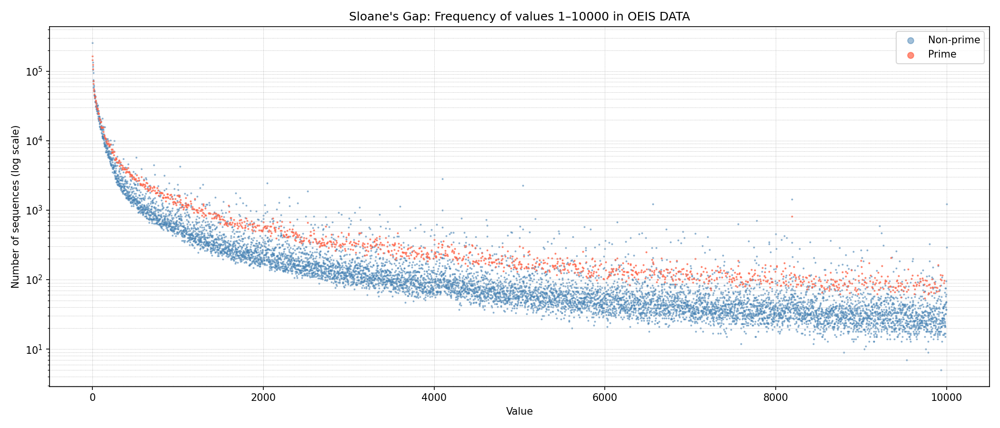

Loading...
Prime numbers tend to appear in significantly more OEIS sequences than composite numbers.

Note: Number of sequences is computed following the definition of N(n) in
"Sloane's Gap" (Gauvrit et al., arXiv:1101.4470)
— "the number of times n appears in the number file" — using per-sequence deduplication:
each sequence contributes at most 1 to N(n), regardless of how many times n appears within it.
This interpretation is supported by the observation that the value range in Figure 1 of the paper
does not exceed the total number of sequences.